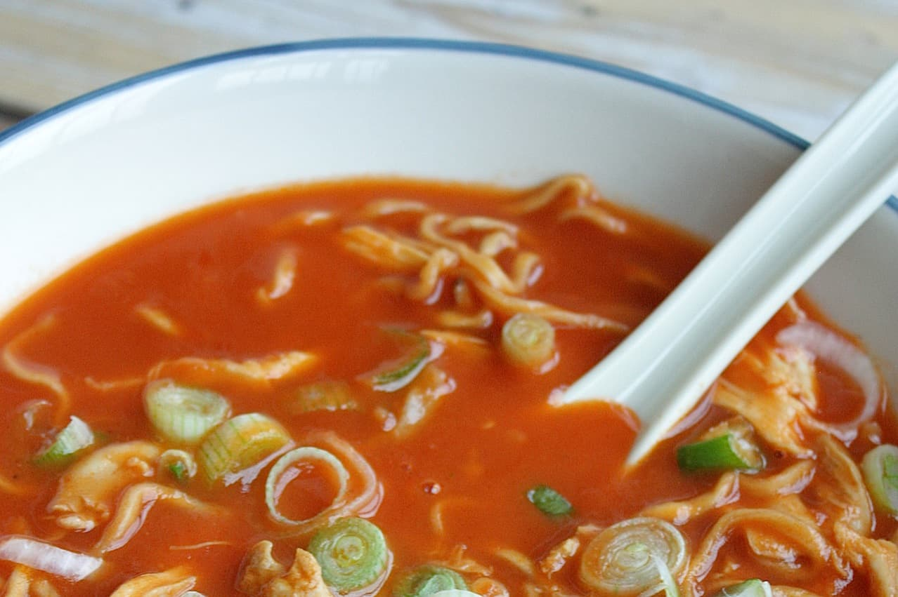

Chinese Tomaten soep
___________________________________________________________________________
Als je even wat anders wil dan de klassieke tomatensoep, dan kan je alvast de Chinese tomatensoep gaan uitproberen.
Ingrediënten
- 2 gesnipperde ui
- 2 appels, blokjes
- 1 teentje knoflook
- 1 fijngesneden gemberwortel
- 2 eetlepels olijfolie
- 1 gesnipperde lente ui
- 1 eetlepel tomatenpuree
- 200 gram Chinese groentemix
- peper en zout
- kerriepoeder
- 1 eetleper sojasaus
- 40 gram bloem
Beredingswijze
- Mix de ui, appels, lenteui, knoflook en gember in de pan
- Voeg de tomatenpuree en de bloem toe en laat deze nog even aanstoven
- Voeg de kippenbouillon toe en laat het geheel een twintigtal minuten koken
- Pureer de soep met een staafmixer en breng op smaak met de kruiden peper, zout, kerriepoeder en sojasaus
- Kook de groentenmix en voeg deze aan de soep toe
- Bak de stukjes kip in een wok en serveer ze samen met de soep

Tip: Lekker met meergranenstokbrood. Voor een minder zout gehaktbrood kun je de bacon weglaten.